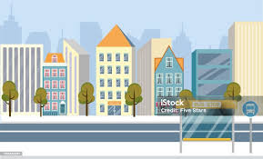
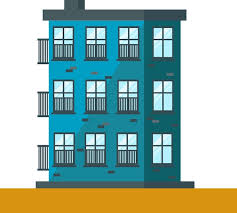

|



Городтекст с переносом по слогам переносом |
аскадные таблицы стилей (CSS) — это язык, используемый для описания внешнего вида документа, написанного на HTML или XML. CSS позволяет отделить содержимое документа от его визуального оформления, что значительно упрощает управление стилями и делает код более организованным. CSS используется для управления цветами, шрифтами, отступами, границами и многими другими аспектами визуального представления веб-страниц. Одной из ключевых возможностей CSS является каскадность — это означает, что стили могут наследоваться от одного элемента к другому, а также могут переопределяться в зависимости от специфичности селекторов. CSS поддерживает различные селекторы для выбора элементов на странице. Эти селекторы могут быть простыми, как селекторы тегов или классов, или сложными, например, селекторы атрибутов и псевдоклассы. Это дает разработчикам возможность точно настраивать, какие элементы будут стилизованы. В CSS также есть возможность использовать медиа-запросы, что позволяет адаптировать стили под разные устройства и разрешения экрана. Это особенно важно в эпоху мобильных устройств, когда важно обеспечить удобное восприятие контента на экранах различных размеров. С помощью CSS можно создавать сложные макеты, используя такие техники, как Flexbox и Grid. Flexbox позволяет легко выравнивать элементы в одном направлении, а Grid предоставляет более мощные возможности для создания двумерных макетов. Кроме того, CSS поддерживает анимации и переходы, что позволяет создавать динамичные и интерактивные элементы на странице. Эти возможности делают сайты более привлекательными и удобными для пользователей. В заключение, CSS — это мощный инструмент для веб-разработчиков, который предоставляет множество возможностей для создания красивых и функциональных веб-страниц. Понимание основ CSS и его возможностей является ключевым для успешного создания современных веб-приложений. |
|---|